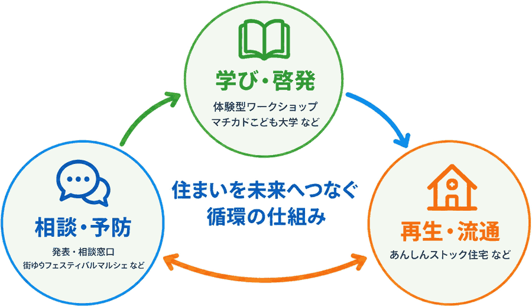

官民連携・モデル事業
協議会構成団体が連携し、学び・相談・再生流通を一体的に推進します。
空き家になる前から、学び、相談し、再生・流通につなぐことで、住まいが循環する地域の仕組みづくりを進めています。

住まいの未来を考えるきっかけをつくり、地域の暮らしと住まいを学ぶ機会を提供しています。
空き家になる前に相談できる窓口をつくり、不安や課題の早期解消をサポートします。
既存住宅を安心して住み継げるよう、地域の住宅ストックを未来へつなぎます。
既存住宅の質を高め、安心して長く住み継げるよう専門家による診断とリフォームを行います。
インスペクションや性能向上リフォームなど、一定の基準を満たした住宅を認定します。